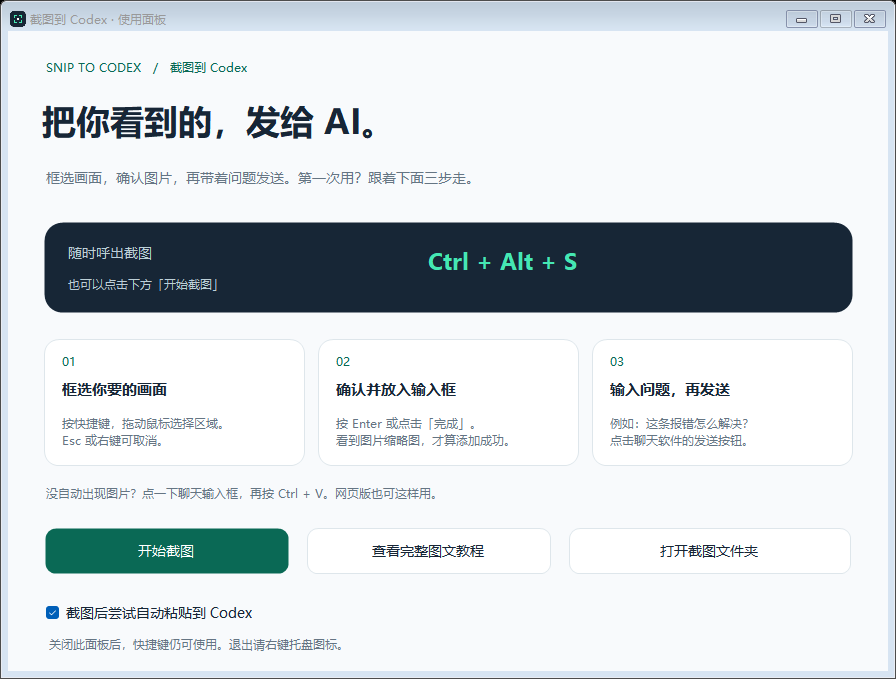
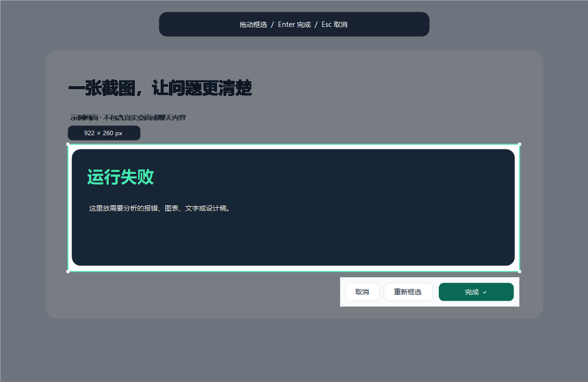

下载后，先完整解压
目前提供 Windows 10 / 11 的 x64 版本。macOS、Linux 暂无安装包；Windows ARM 设备尚未验证。截图助手本身不需要账户或 API 密钥；使用 AI 聊天仍需你自己的 Codex / ChatGPT 账户。
- 打开本项目最新发行版，或在项目页面找到右侧的 Releases（发行版），进入最新版本。
- 在 Assets（资源） 中下载
SnipToCodex-v1.1.0-windows-x64.zip。普通用户选这个包；Source code是给开发者的源码。 - 右键 ZIP 文件 → 全部解压缩。请保留整个目录，不要只拖出一个 exe，也不要直接在压缩包里运行。
- 进入解压后的文件夹，双击
Install.cmd。它会安装到当前用户目录，并创建桌面和开始菜单快捷方式，无需管理员权限。 - 打开桌面的 Snip to Codex，看到下面的使用面板即表示启动成功。
想免安装使用？双击 Start.cmd 即可。以后移动程序时，要一起移动完整文件夹。

使用面板实机界面渲染。截图快捷键若被其他软件占用，面板会显示备用组合。
只框选需要讨论的部分
- 先打开 Codex 或 ChatGPT 桌面版，切换到你想发送图片的那条对话。
- 把要截图的报错、图表或文字显示在屏幕上。按住 Ctrl 和 Alt，再按一下 S，然后松开按键。
- 屏幕变暗后，按住鼠标左键，从区域一角拖到另一角，再松开。亮起的区域就是最终图片，边上的数字是图片尺寸。
- 框错了？点击 重新框选，或在画面上重新拖动。不要截图了？按 Esc 或鼠标右键。
- 满意后，按 Enter 或点击 完成。画面恢复，图片同时保存到本机并复制到剪贴板。

教学用模拟画面，不包含任何人的实际桌面信息。
不记得快捷键时，在使用面板点击 开始截图。面板会暂时隐藏，让你看到原来的屏幕。
看到缩略图，才算加进了聊天
截图后，工具会尝试把图片粘贴到 Codex / ChatGPT 桌面版当前对话的输入框。请亲眼确认输入框里出现了图片缩略图。工具不会自动点击发送。
- 若没有图片：点击目标聊天的输入框，按 Ctrl + V。
- 看到图片后，补上一句你希望 AI 做的事情。
- 点击聊天软件自己的 发送 按钮。收到消息后，AI 才会处理你发来的图片。
“请解释这条报错，并按步骤教我解决。”
“请把截图中的文字整理成可复制的内容。”
“帮我看一下这张图表，主要结论是什么？”
使用网页版：先截图，再回到浏览器中的聊天输入框，手动按 Ctrl+V。自动定位输入框只适配受支持的 Windows 桌面版，不会帮你选择浏览器标签页。
打开了多个聊天窗口：优先在目标 Codex 窗口里按快捷键。若工具无法确定该往哪个窗口粘贴，就只复制图片，交给你手动粘贴。
若只想要截图，不想自动跳回聊天，可在使用面板取消勾选 截图后尝试自动粘贴到 Codex。
日常使用速查
| 你想做的事 | 怎么操作 |
|---|---|
| 开始框选 | Ctrl+Alt+S，或双击系统托盘图标 |
| 确认选区 | Enter，或点击“完成” |
| 放弃截图 | Esc 或鼠标右键 |
| 手动添加图片 | 点击聊天输入框 → Ctrl+V |
| 寻找保存的原图 | 右键托盘图标 → 打开截图文件夹 |
| 再次查看教程 | 使用面板或托盘菜单 → 查看图文教程 |
| 彻底退出 | 右键托盘图标 → 退出 |
托盘是 Windows 屏幕右下角时钟附近的小图标区域。如果没看到图标，点击旁边的 ^ 展开隐藏图标。关闭使用面板会继续保留后台快捷键；退出后则需要重新启动。
可选：让 Codex 主动调用截图能力
只需要“截图后发图”的用户，可以跳过这一节。桌面助手独立工作，不要求安装 Codex CLI 或插件。
插件适合希望对 Codex 说“帮我框选截图并分析”或“读取我最近一次截图”的用户。项目仓库包含可安装的插件市场，具体安装命令见仓库首页的“可选：安装 Codex 插件”。插件安装后新建一条 Codex 任务，以便载入能力。
说“帮我框选截图并分析”时，屏幕会弹出选区，你需要亲手拖动框选并确认。说“读取我最近一次截图”时，Codex 会打开这个工具最近保存的 PNG，并应说明截图时间，避免把旧图当成新图。
遇到问题，从这里开始
按快捷键没反应
先确认工具正在运行。打开使用面板查看实际快捷键：默认 Ctrl+Alt+S 被占用时会改用 Ctrl+Alt+F8；两组都被占用时，可点击“开始截图”或双击托盘图标。退出另一款占用快捷键的软件后，重新启动本工具即可重新注册。
截到了图，但聊天里没有图片
点击正确的聊天输入框后按 Ctrl+V，确认缩略图出现。桌面版升级、同时打开多个窗口、输入框不可见或应用权限不同，都可能影响自动粘贴。建议两个程序都以普通用户身份运行。仍然不能粘贴时，打开截图文件夹，把最新 PNG 拖进聊天或通过聊天附件按钮添加。
没有 Codex，只有 ChatGPT 网页版，可以用吗？
可以用它截图，再在网页版输入框手动 Ctrl+V。是否支持图片附件仍取决于目标聊天软件和你当前账户的功能。
不知道截图保存在哪里
在文件资源管理器地址栏输入 %LOCALAPPDATA%\SnipToCodex\Captures 后回车，也可以用托盘菜单打开。截图不会自动清理；不需要的图片可自行删除。
下载包里没有可运行文件
可能下载了“Source code”。回到 Releases，在 Assets 中下载文件名带 windows-x64 的 ZIP。也可能只解压了部分文件，请完整解压。普通用户无需编译源代码。
图片黑屏、某些画面截不到
受保护的视频、系统安全桌面或部分特殊渲染窗口可能无法截图。先用普通桌面窗口测试，或使用目标程序自身的导出功能。工具不绕过系统保护。
能开机自动启动吗？
默认不开启。若你希望登录后启动，按 Win+R 输入 shell:startup，把桌面的 Snip to Codex 快捷方式复制进去。移除这份快捷方式即可取消。启动快捷方式参数添加 --quiet 可只显示托盘，不弹出面板。
如何更新或卸载
更新：退出旧版本，下载并完整解压新发行包，再运行 Install.cmd。卸载：在安装目录运行 Uninstall.cmd，之后手动删除应用文件夹。默认位置是 %LOCALAPPDATA%\Programs\SnipToCodex。截图会保留，需要时自行删除；若安装了 Codex 插件，请在 Codex 插件页单独卸载。你手动添加的启动项也需自行移除。
反馈问题时要提供什么？
在 GitHub 项目的 Issues 中说明 Windows 版本、工具版本、桌面版还是网页版、操作步骤及看到的结果。可附错误截图，但先遮住个人信息。%LOCALAPPDATA%\SnipToCodex\status.txt 只记录最近一次动作、路径或错误；分享前检查其中的个人目录名称。
你的截图如何被处理
工具只在你按快捷键、点击截图或明确调用截图命令时采集画面。确认后把选区保存为 PNG 并复制到剪贴板；取消不会保存该次截图。截图程序本身没有网络上传、遥测或后台录屏功能。
自动粘贴会将图片交给目标聊天软件作为待发送附件，之后的上传和处理遵循该软件的行为和条款。通过 Codex 插件请求读取本地图片时，图片会进入该任务的模型上下文。请在框选时只保留你愿意交给 AI 处理的内容。